Senior Capstone
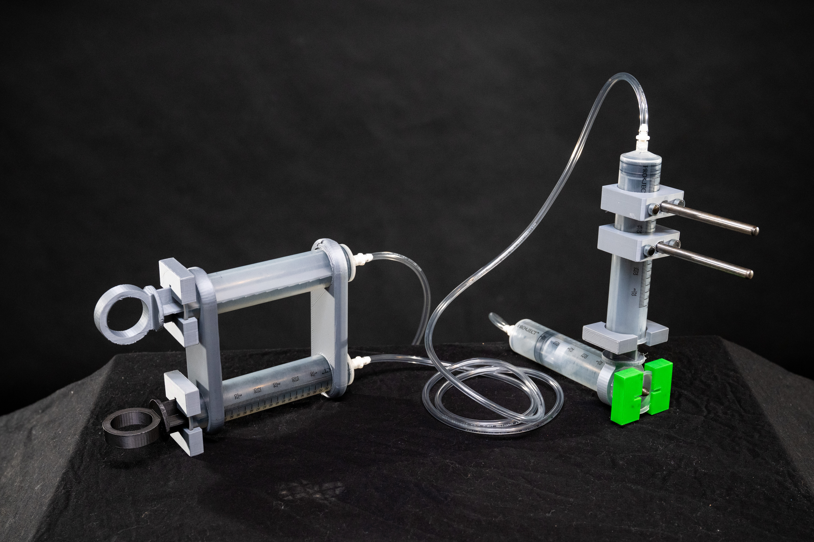
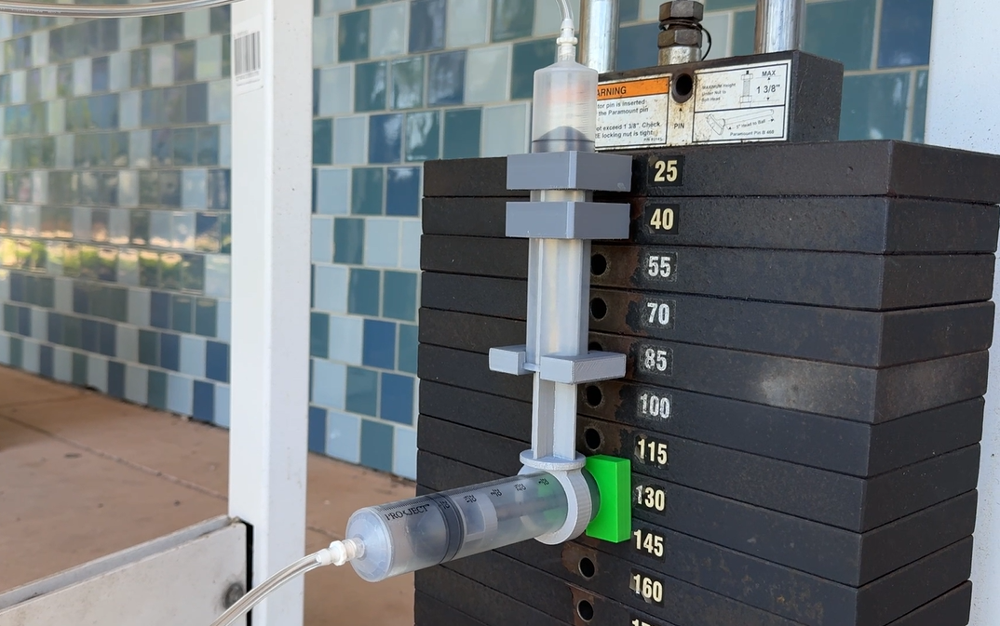


The GymPal, the final result of my senior capstone, is a gym accessory made to help people with cerebral palsy have a more independent experience in the gym. Specifically to make it easier for them to remove the pin out of a weight stack and adjust the weight used during an exercise.
The Wishkeeper
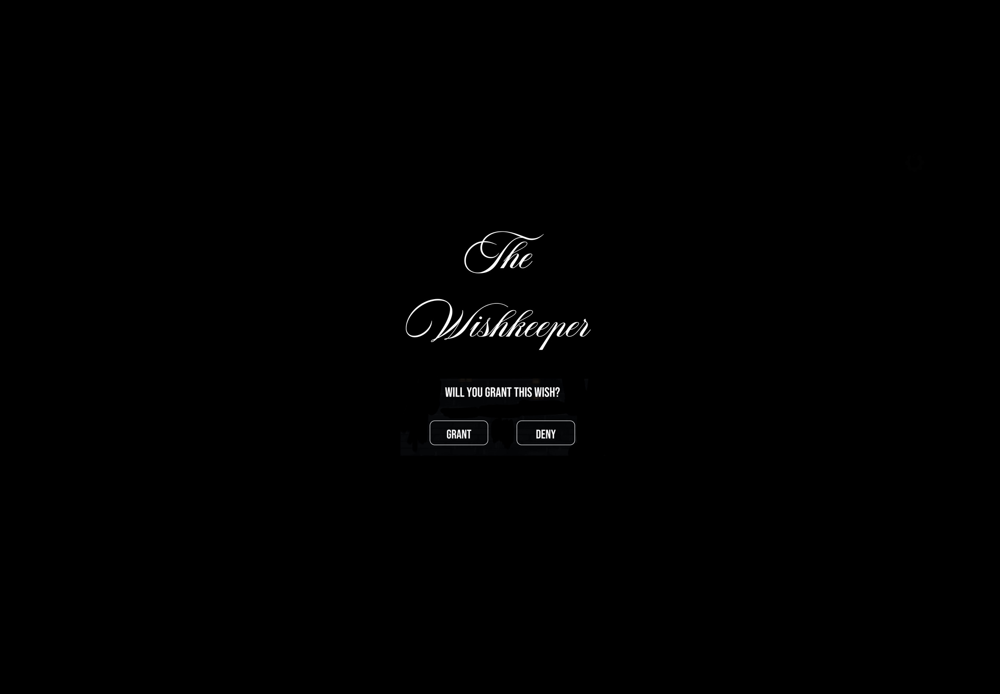
The Wishkeeper is an interactive choose your own path type game made for the Web Narratives class of the MAD minor. It was made to encourage players to think carefully about the decisions they make and the impact those decisions can have on others.
Xbox Charging Dock
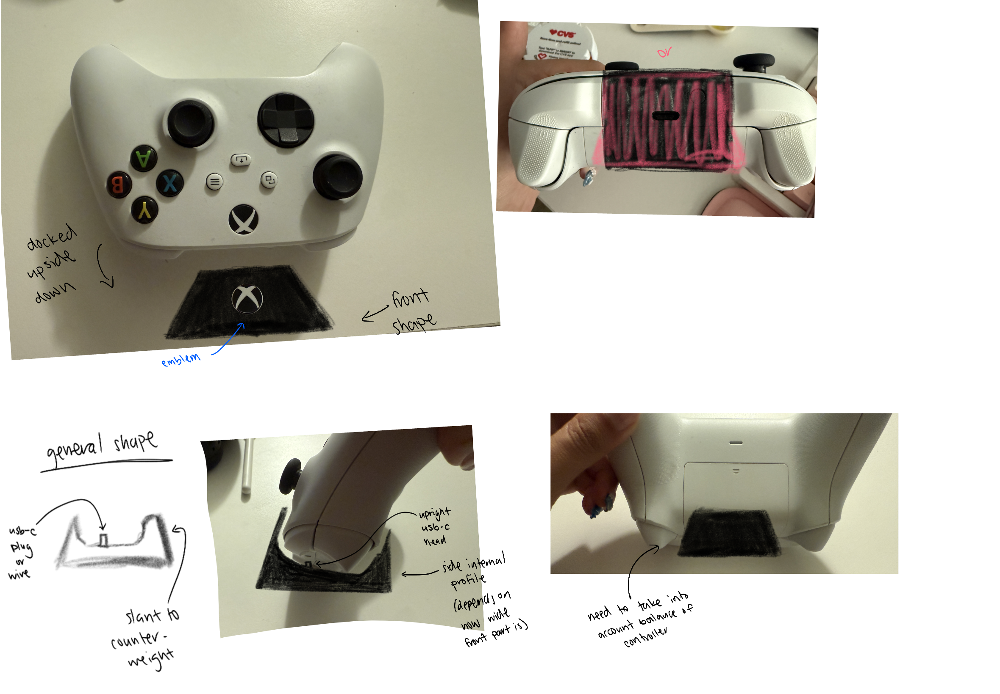
This project started from a thought that occurred during a weekly game night with a friend. He said that there was no convenient way to charge Xbox controllers, so as a mechanical engineer I said I would try to design one.
Russian Nesting Hearts
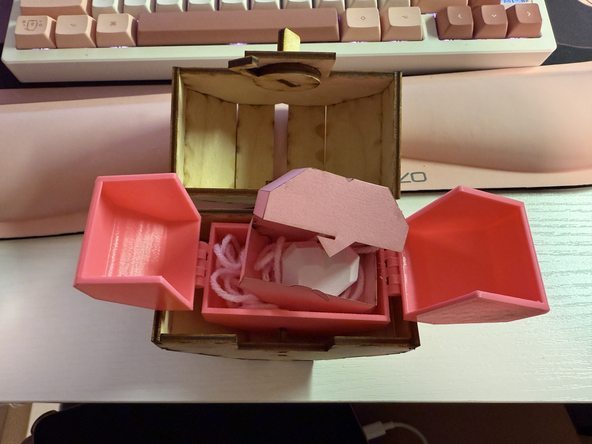
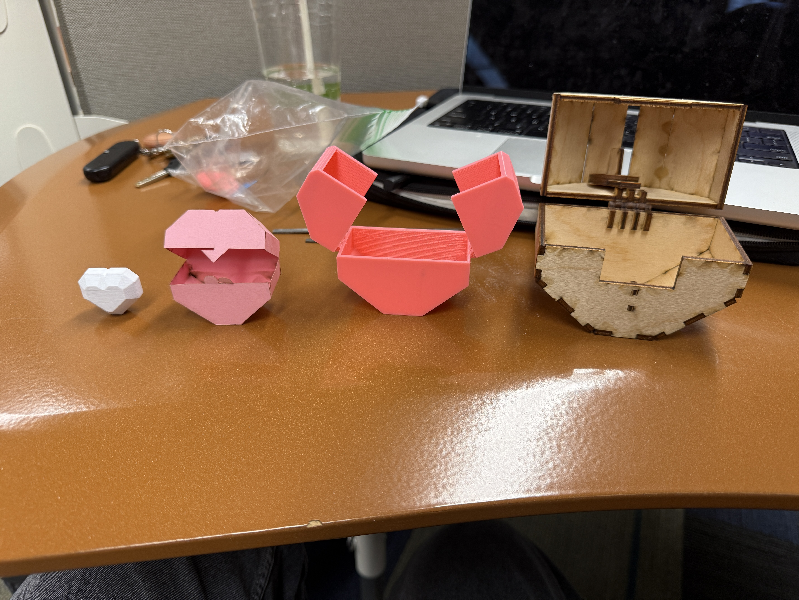
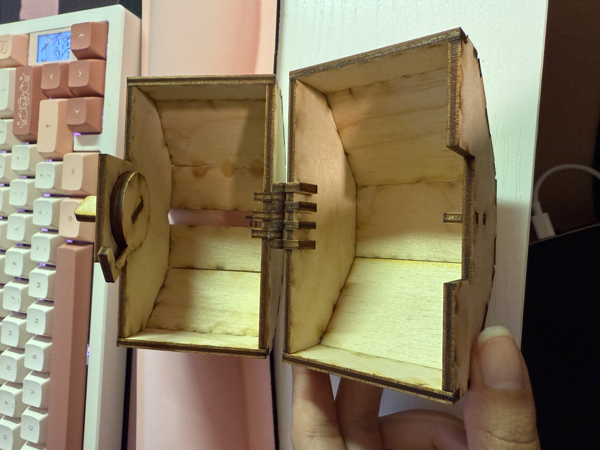
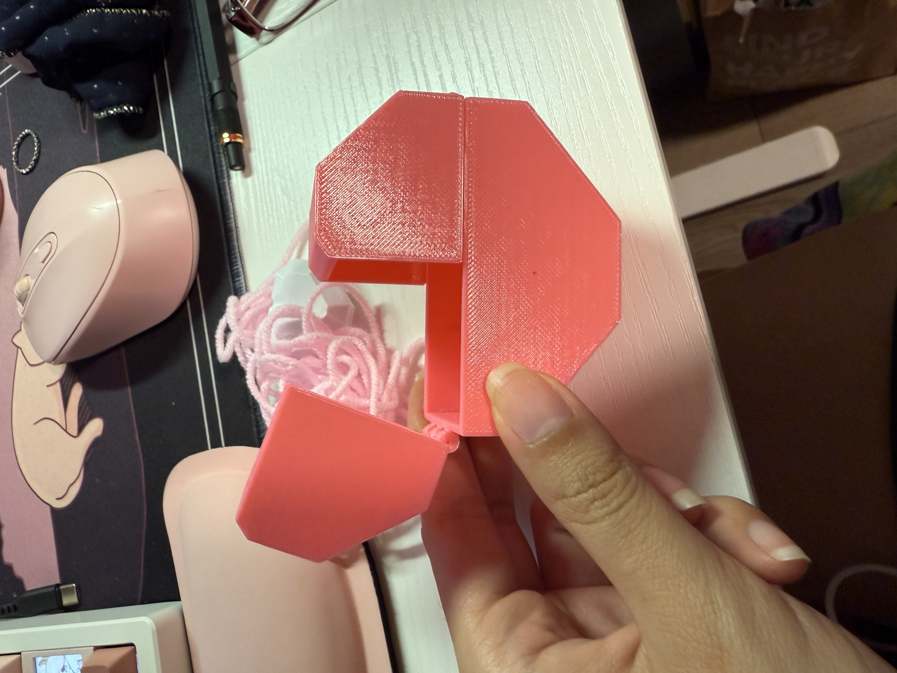
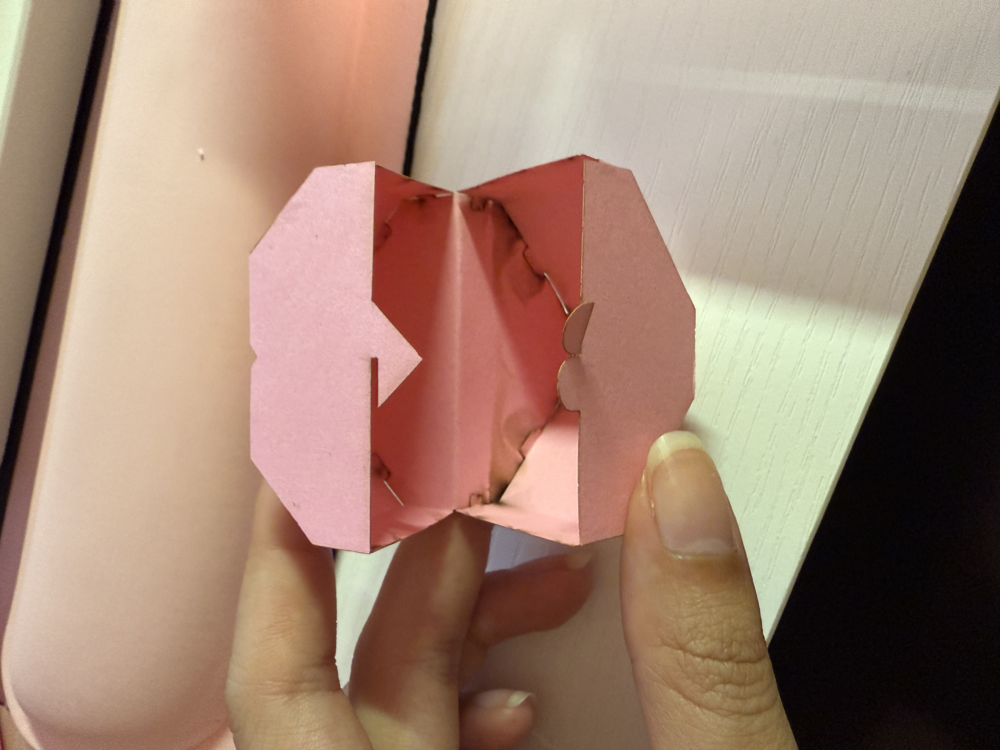
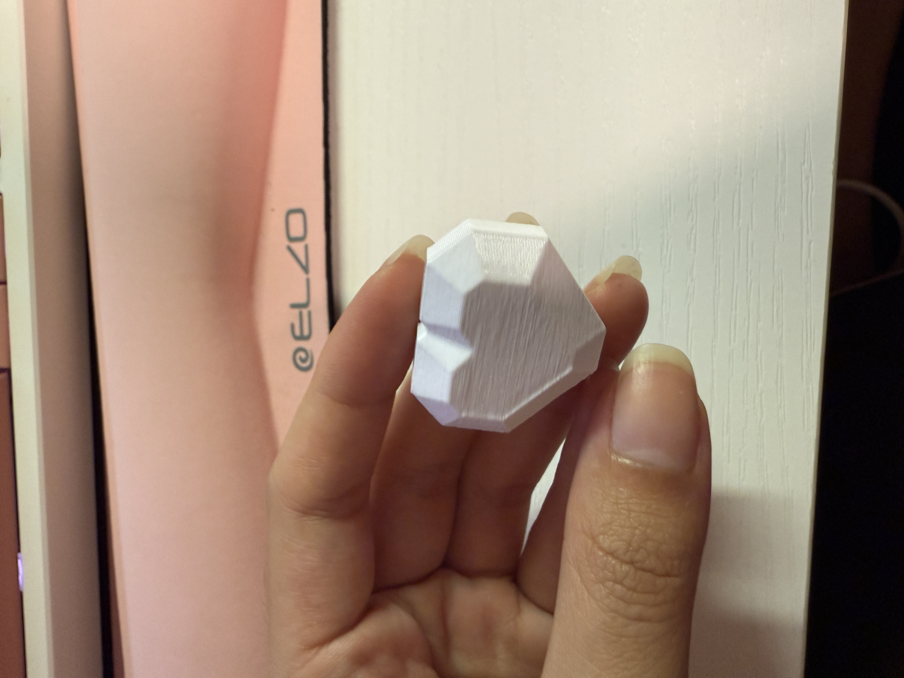
The Russian Nesting Hearts was a project for the prototype and manufacturing class. The idea was rooted in the concept of russian nesting dolls, and each layer was made in the shape of a heart and with slightly different fabrication methods.
A Night in the Rain
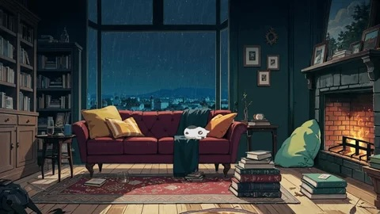
A Night in the Rain was the final deliverable for the audio engineering and design class. It is a lofi style piece with rain as it's main idea. The tracks layer and build as the night goes on.